TVV RESEARCH DIGEST — November 2, 2026 — 12 desks
1. Major Geopolitical Conflict Developments
- ★ Hormuz update, Monday: Iran's foreign ministry spokesman Esmaeil Baghaei said Tehran is ready to reopen the Strait of Hormuz within two days, down from the seven days it first proposed through Qatar in September, calling the shorter timeline 'another indication of Iran's good-faith approach' but saying 'everything depends' on Washington accepting its demands. He said messages are still being exchanged through mediators and warned that any attack would meet an 'immediate and comprehensive response'. No agreement has been announced, and the reopening remains conditional. Euronews · Arab News (Reuters)
- ★ Doha talks pause: Iranian negotiators left Doha on Nov 1 after three days with Qatari mediators; an official briefed on the talks says a draft proposal is circulating and a follow-up meeting is possible, and that the departure was not due to difficulties. Deputy Foreign Minister Kazem Gharibabadi stays in Doha to relay messages. The talks come amid concern the conflict could escalate again after the Nov 3 US midterms; Baghaei said Tehran does not expect the elections to produce a new US. China is sending a special envoy to Iran, Saudi Arabia and Oman. Straits Times · AP
- ★ Ukraine, overnight Nov 1-2: Russia launched 193 drones, 75 of them jet-powered Shaheds; Ukraine's Air Force says 154 were downed or jammed, with hits at 26 locations. Kyiv Post reports one killed by a guided bomb in Izium and at least 17 injured, including 12 in a Kharkiv-region village and five in Odesa region; UNN's regional tally is 3 killed, including a 13-year-old girl in Vinnytsia region, so the death counts differ by source. Kyiv Post · Ukrainska Pravda · UNN
- ★ Yemen: the UN migration agency IOM says more than 300,000 people have been displaced by renewed fighting in western Yemen, almost all in the past two months, including over 43,000 from Lahj's Al-Madaribah Wa Al-Aarah district since October; Aden hosts more than 56,000 displaced. IOM is seeking $45 million for six months of emergency aid. IOM · Arab News
- Taiwan, 24 hours to 6 AM Nov 2: Taiwan's defense ministry tracked 19 PLA aircraft sorties, 7 navy ships and 6 official vessels, with 4 aircraft entering the southwestern and eastern air defense zone. Taiwan MND · Taiwan News
- Gaza and Lebanon: medics say Israeli strikes killed three people in Gaza on Monday, two in Khan Younis and one in Al-Mussadar; Israel says it targeted militants. Gaza health officials count at least 1,580 Palestinians killed since the ceasefire a year ago, while Israel says four soldiers have been killed. Strikes and shelling also continued in southern Lebanon. CNA · Arab News
- Iran odds, forward view: Polymarket prices the US-Iran ceasefire holding through Nov 30 at 38% and through Dec 31 at 26%, and a US end to the Iran blockade by Dec 31 at 41% (64% by Mar 31, 2027). Near-term implication: traders see the current pause as fragile beyond mid-November, even with the two-day Hormuz offer (see graph; market odds, not forecasts). Polymarket ceasefire · Polymarket blockade
- Threat language is running ahead of acts: in the week to Oct 26 the Caldara-Iacoviello threats sub-index averaged 205 and the acts sub-index 188, both well below their March highs of 396 and 501 (see graph). Caldara-Iacoviello GPR
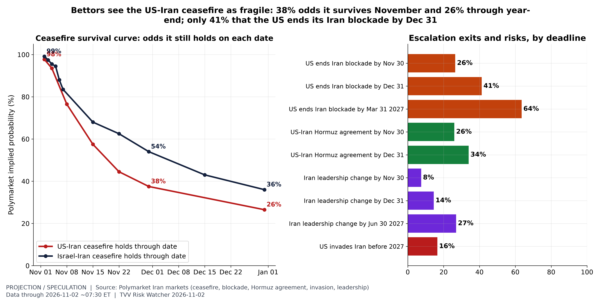
Iran: ceasefire survival curve. PREDICTIVE (market odds). Polymarket 'Yes' prices ~7:30 AM ET Nov 2. US-Iran ceasefire continues through: Nov 02 98%, Nov 04 94%, Nov 08 76%, Nov 15 57%, Nov 22 44%, Nov 30 38%, Dec 31 26%. Israel-Iran: Nov 02 99%, Nov 15 68%, Nov 30 54%, Dec 15 43%, Dec 31 36%. US announces end of Iranian blockade by: Nov 02 2026 2%, Nov 15 2026 14%, Nov 30 2026 26%, Dec 31 2026 41%, Mar 31 2027 64%. US-Iran Hormuz agreement by: Nov 02 3%, Nov 30 26%, Dec 31 34%. US invades Iran before 2027: 16%. Iran leadership change: Nov 30 2026 8%, Dec 31 2026 14%, Jun 30 2027 27%. Market prices are crowd-implied probabilities, not intelligence; markets resolve under their own rules. No AIS/PortWatch data used. [Projection; data as of 2026-11-02 ~07:30 ET (Polymarket)] Source: polymarket.com data page
2. Major Terror / Security Incidents
- ★ Moscow, US-tipped plot: Russia's FSB detained a teenager suspected of planning an attack at the Tsaritsyno Museum Reserve after the US embassy warned on Oct 31 of a credible threat of a mass-casualty event there; the park was closed and events cancelled. The FSB says the suspect posted TikTok photos in tactical gear with what looked like an automatic weapon, captioned 'I found a place', and followed a neo-Nazi Telegram channel; it thanked the US for the information. The US also warned Russia weeks before the March 2024 Crocus concert-hall attack. Al Jazeera · TASS
- ★ Cyber, NAS ransomware: a Cerber variant, C3RB3R, is encrypting Synology NAS devices in South Korea and demanding about $2,952 in bitcoin, doubling after five days. Chinese firm 360 links it to two DSM flaws disclosed Sep 18 (CVSS 9.8), while Synology cites a flaw patched in December 2024; the attribution conflicts, but both say to upgrade DSM, and two-factor login does not protect. Bitcomme
- Cyber, leak-site claims Nov 1: Qilin listed US law firm Meshbesher & Spence, with 212 exposed passwords in a ParanoidLab report, and the Barracuda group began a free release of data from Turkish hospitality-equipment maker EVINOKS; the companies had not confirmed details. QPulse (Qilin) · QPulse (Barracuda)
- Terror coverage index: in September, terror-act articles were 0.42% of all articles (2025 average 0.55%) and terror-threat articles 0.09% (2025 average 0.19%), far below the 9/11 peak of 8.8% (see graph). Caldara-Iacoviello GPR
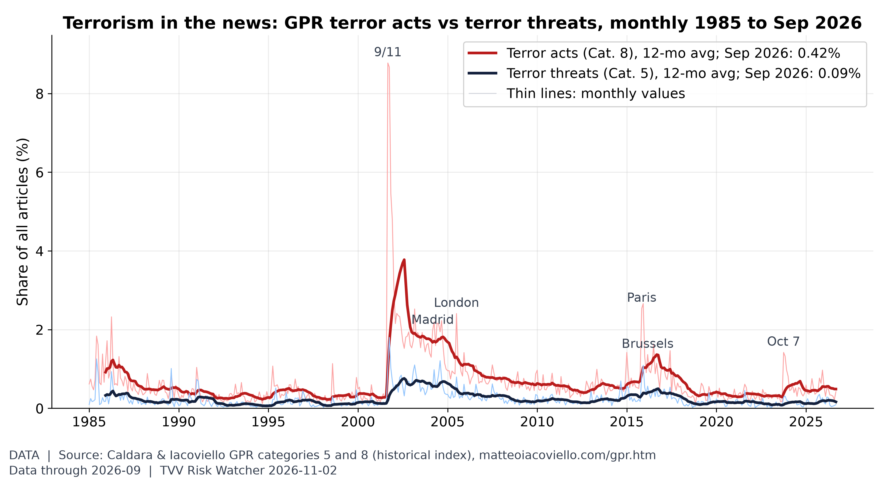
Terror acts vs terror threats. In September 2026, terror-act articles were 0.42% of all articles (2025 average 0.55%) and terror-threat articles 0.09% (2025 average 0.19%), far below the 9/11 peak of 8.8%. [Data; data as of 2026-09 (monthly; held: next update early Nov)] Source: matteoiacoviello.com data page
3. Earthquakes and Eruptions
- ★ No qualifying earthquake: the latest M6+ event, an M6.0 about 165 km northwest of Port-Olry, Vanuatu, at 10 km depth on Nov 1 (11:47 UTC), carried a GDACS/USGS green alert with no reported deaths or damage. GDACS
- ★ 2026 pace, projection: USGS counts 1,722 M5+ quakes through Nov 2, above 2022-2024 but below 2021 (1,934) and 2025 (1,829) at the same date. If the year-to-date rate holds, 2026 ends near 2,052, a labelled projection only; earthquakes cannot be predicted (see graph). USGS ComCat
- Past 30 days: USGS logged 730 M4.5+ quakes to Nov 2, 22 of them M6+; the largest was the M7.7 near Pitaloza Arriba, Panama, on Oct 9 (see graph). USGS
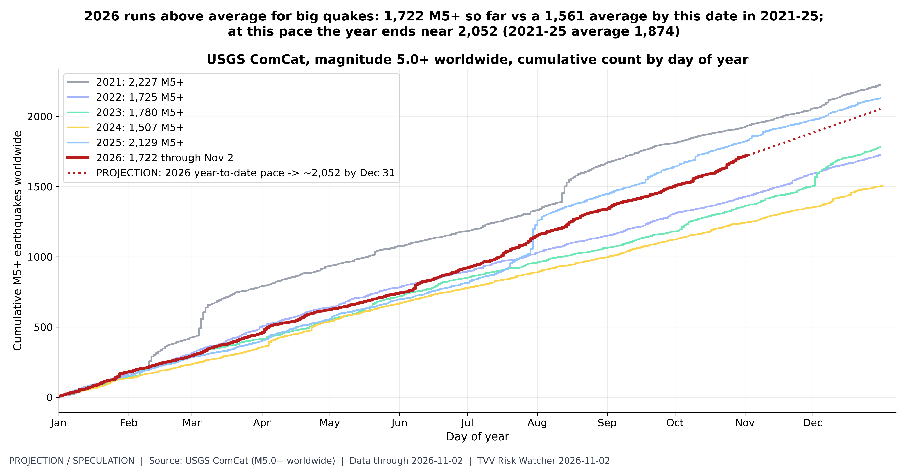
Quake pace: 2026 vs prior years. PREDICTIVE. USGS ComCat M5.0+ worldwide: 1,722 in 2026 through Nov 02 08:13 UTC vs same-date counts 2021 1,934, 2022 1,432, 2023 1,366, 2024 1,245, 2025 1,829; full-year totals 2021 2,227, 2022 1,725, 2023 1,780, 2024 1,507, 2025 2,129. Method: 2026 year-to-date daily rate held to Dec 31 (~2,052). Earthquakes are not predictable; this only shows where the current count is heading if the rate holds, and large aftershock sequences inflate counts. [Projection; data as of 2026-11-02 (USGS ComCat)] Source: earthquake.usgs.gov data page
4. Solar / Space Weather
- ★ Quiet sun: NOAA's highest observed Kp in the past 24 hours was 3, below storm levels, and it expects no G1 or stronger storm through Nov 4; solar radiation storm odds are 1% a day. The 10.7 cm solar radio flux fell to 94 on Nov 1 against a 27-day average of 112 (see graph). NOAA SWPC 3-day forecast · NOAA SWPC F10.7
- ★ Pole drift, standing warning: no new measured pole-position reading since the Nov 1 weekly chart, which showed the north magnetic pole still moving toward Siberia; the next weekly update is due Nov 8. Steady drift is not a timetable, and no one can predict when a geomagnetic excursion might come. Michael Hentschel's own view: 2035 at the earliest. NOAA NCEI
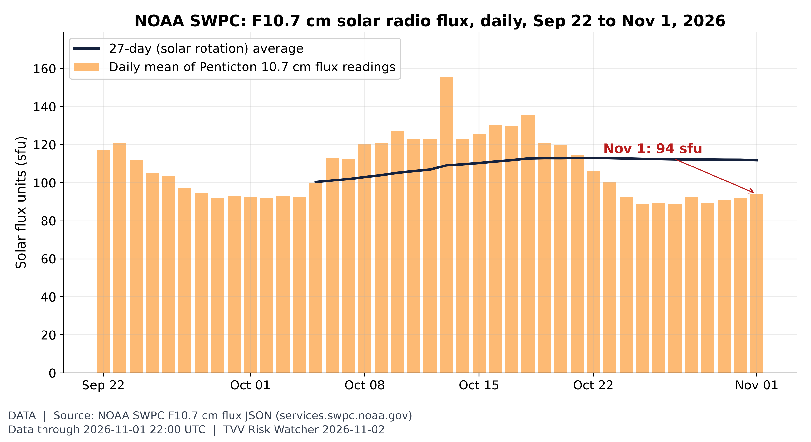
Solar activity proxy: F10.7 flux. The 10.7 cm solar radio flux, a standard proxy for solar activity and upper-atmosphere drag on satellites, was 94 sfu on Nov 1 (27-day average 112; window range 89-156). [Data; data as of 2026-11-01 22:00 UTC (latest Penticton reading)] Source: swpc.noaa.gov data page
5. Critical Infrastructure / Transportation Disruptions
- ★ Ukraine grid and water: Ukrenergo imposed emergency power outages in some regions after the Nov 1-2 strikes, suspending scheduled outages there; Izium lost all power after a guided-bomb strike damaged high-voltage lines, a DTEK Odesa grid facility was hit, and Bila Tserkva in Kyiv region lost its water supply after a drone damaged an infrastructure site. Kyiv Post · Hromadske
- ★ Sudan grid under drone attack: AP reports the power grid is nearing collapse. Sudan Tribune counts more than 13 distribution stations badly damaged across seven states; the latest hit, on Sat Oct 31, struck the Haya transformer and an oil pumping station in the east. The electricity company blames the RSF, and Port Sudan's claim that the drones flew from Ethiopia is unverified. AP · African Quarters
- ★ Freight-cost pressure: US retail diesel was $6.352 a gallon on Oct 26, below the all-time record of $6.529 set the week of Sep 21 but still above the 2022 peak of $5.810; its premium over regular gasoline, about $2.08, is at a record. Oil fell more than 4% on Monday morning, which could ease pump prices if it holds (see graph). EIA · Yahoo Finance
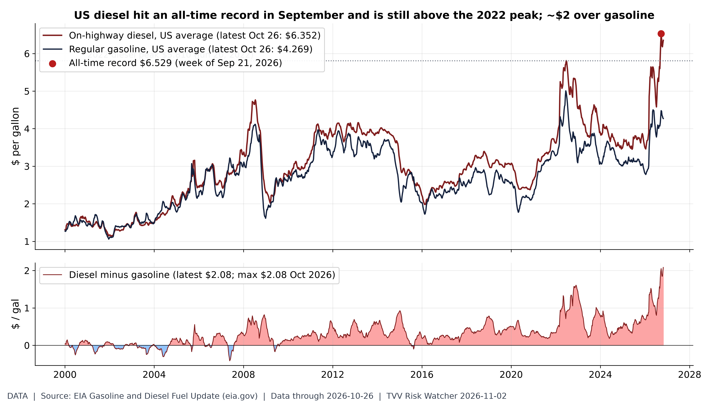
Diesel record: the freight-cost shock. US on-highway diesel hit an all-time record $6.529/gal in the week of Sep 21 and was $6.352 on Oct 26, still above the 2022 peak ($5.810); the premium over regular gasoline ($4.269) is $2.08 vs a record $2.08 (Oct 2026). [Data; data as of 2026-10-26 (weekly EIA retail survey; next Mon Nov 2)] Source: eia.gov data page
6. Econo-Metrics
- ★ ISM day: October ISM manufacturing is due at 10 AM ET, with consensus 54.6 against September's 54.5 and the employment index expected at 53 (52.7 prior); Chicago Fed President Goolsbee speaks at 11:15 AM. JOLTS follows Tuesday, ISM services Wednesday and the October jobs report Friday. WiseView · Trade2Spike
- ★ China's two PMIs diverge: the private RatingDog (formerly Caixin) manufacturing PMI was 52.0 in October, down from 52.1 but above the 51.6 consensus, with output at a six-month high, while the official NBS PMI fell into contraction at 49.3. The two surveys use different samples, so read them side by side. TrendForce DataTrack
- ★ Eurozone factories: the final HCOB manufacturing PMI for October was 52.7, revised up from the 52.4 flash but down from September's 52.9, still expanding. Trading Economics
- ★ Recession gauge, projection: the Sahm-rule indicator stands at 0.00 with unemployment at 4.2% in September; on its last six months' pace it is not heading toward the 0.50 trigger. Near-term implication: only a sharp jump in Friday's unemployment rate would change the picture (see graph; a labelled projection, not a forecast). BLS via FRED
- Long rates: the 10-year Treasury closed at 4.94% on Oct 30 and the 30-year at 5.31%; the 10-year's 2026 high of 5.31% on Oct 5 was its highest since May 2002 (see graph). FRED
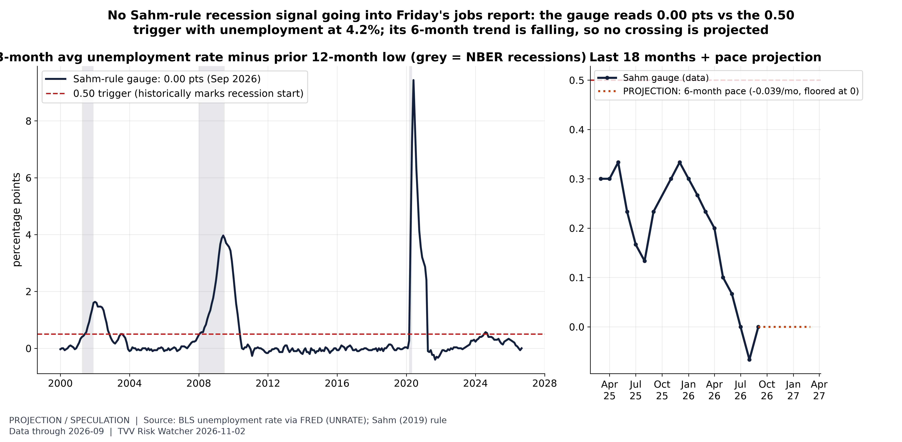
Sahm-rule gauge vs the trigger. PREDICTIVE (pace projection on real BLS data). Unemployment rate 4.2% in Sep 2026; Sahm gauge = 3-month average minus the lowest 3-month average of the prior 12 months = 0.00 pts. Method: straight-line extension of the last 6 months' change (-0.039 pts/month); its 6-month trend is falling, so no crossing is projected. A labeled projection, not a forecast. October jobs report due Fri Nov 6 (BLS). Jobs/Labor series. [Projection; data as of 2026-09 (BLS CPS via FRED UNRATE)] Source: fred.stlouisfed.org data page
7. Epidemic / Bio-Metrics
- ★ Ebola update, DRC: SitRep 170 counts 10,467 confirmed cases to Oct 31. Africa CDC says about 80% of new cases are arising outside monitored contact chains, a sign transmission is escaping tracing. Death counts conflict: the SitRep series shows 5,103 deaths, while the INRB figure of 5,372 includes a retrospective reconciliation of deaths in Ituri. Africanews (AP) · ebola-tracker
- ★ Ebola, projection: the 14-day average rose to 72.3 new cases a day from 65.1 in the prior two weeks; at that pace the cumulative count passes 11,000 around Nov 7. WHO's last outbreak notice (Oct 23) also lists cases in Kenya and Nigeria and the TUMAINI vaccine trial in Bunia (see graph; a simple pace projection, not an epidemiological forecast). ebola-tracker · WHO
- ★ Measles, projection: on the last eight weeks' pace (about 224 a week) the NNDSS count of 4,461 through week 42 reaches about 6,700 by year-end. Polymarket prices more than 6,000 cases at 87%, more than 7,000 at 48% and more than 10,000 at 6% (see graph; labelled projection and market odds). CDC NNDSS · Polymarket measles
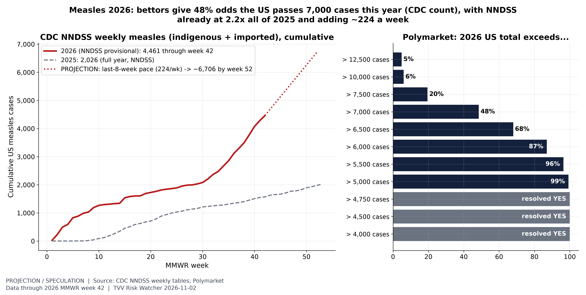
Measles: pace and year-end odds. PREDICTIVE. NNDSS provisional weekly measles cases (indigenous + imported), US residents: 4,461 through MMWR week 42 of 2026 vs 2,026 in all of 2025. Method: last-8-week average (224.5/week) held to week 52 (~6,706), a labeled straight-line projection. Polymarket thresholds ~7:30 AM ET Nov 2 (resolve on the CDC measles page count, which runs ahead of NNDSS weekly tables; rungs up to 4,750 have already resolved Yes): >5k 99%, >5.5k 96%, >6k 87%, >6.5k 68%, >7k 48%, >7.5k 20%, >10k 6%, >12.5k 5%. [Projection; data as of 2026 MMWR week 42 (NNDSS provisional); Polymarket 2026-11-02] Source: data.cdc.gov data page
8. Gold and Silver and Commodities
- ★ Oil slides on Iran talks: Brent January futures fell 4.2% to $108.66 and WTI 4.1% to $99.85 by 5 AM ET, below $100, as the Qatar-mediated talks eased supply fears. Yahoo Finance · Capital Street FX
- ★ Gold rebounds: spot gold rose to about $3,900-3,915 on Monday from a one-year low, and silver bounced about 2.5%, as softer oil eased inflation worries ahead of the midterms. CNBC · Capital Street FX
- ★ Price-range odds, projection: Polymarket gives WTI 70% odds of touching $105 in November but 76% of dipping to $95 and 50% to $90; gold has 15.5% odds of dipping to $3,500 by Dec 31 and 5% of reaching $5,000. Near-term implication: traders see wide two-way oil risk around the Iran talks and little chance of a gold breakout (see graph; market odds). Polymarket WTI · Polymarket gold
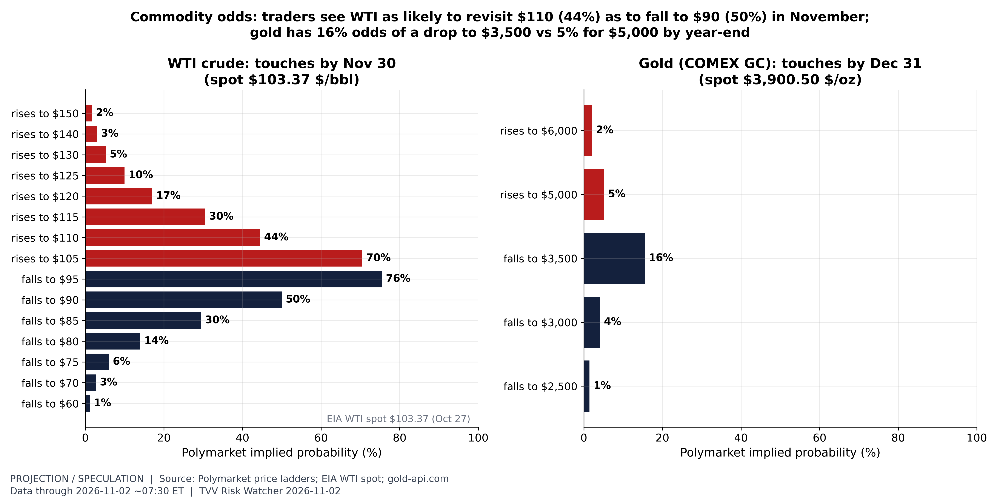
Oil and gold: price-range odds. PREDICTIVE (market odds). Polymarket 'what price will it hit' ladders ~7:30 AM ET Nov 2 (each bar = odds the price touches that level before the deadline). WTI in November: up $105 70%, up $110 44%, up $115 30%, up $120 17%, up $125 10%, up $130 5%, up $140 3%; down $70 3%, down $75 6%, down $80 14%, down $85 30%, down $90 50%, down $95 76% (the $100 upside rung already resolved Yes). Gold by Dec 31: up $5,000 5.1%, up $6,000 2.1%, up $7,000 1.8%; down $2,500 1.5%, down $3,000 4.1%, down $3,500 15.5%. Reference spot: WTI $103.37 (EIA Cushing, Oct 27, latest EIA daily), gold $3,900.50 (gold-api.com, Nov 2 07:07 ET). Illiquid rungs with no trading history (e.g. a $4,500 gold rung) are excluded. [Projection; data as of 2026-11-02 ~07:30 ET (Polymarket); WTI spot 2026-10-27 (EIA)] Source: polymarket.com data page
9. Stock Averages and Nasdaq Major Movers
- ★ Monday premarket: by about 7 AM ET Dow futures were up 0.49%, S&P 500 futures 0.46% and Nasdaq-100 futures 0.74% after a dismal October in which the Nasdaq-100 shed more than $2.5 trillion of value. Apple eased about 0.4% and Palantir rose about 1.3% before their reports tonight; Estee Lauder gained 2.6% on raised guidance, and Okta rose 2.7% on news it will join the S&P 500, replacing Kenvue. Reuters via Investing.com · Yahoo Finance
- ★ Weekly tape to Fri Oct 30: the S&P 500 closed at 7,580.07, down 0.57% over five sessions and 3.1% below its Oct 6 record of 7,818.93 (see graph). Cboe
- ★ Breadth: small caps have regained ground, with IWM up 13.5% this year against 12.4% for QQQ and the IWM/QQQ ratio up 7.7% over 20 sessions and 10.4% above its Oct 7 low (see graph). Nasdaq.com
- Crypto: bitcoin was about $77,800 on Monday morning, little changed from the weekend. Fortune
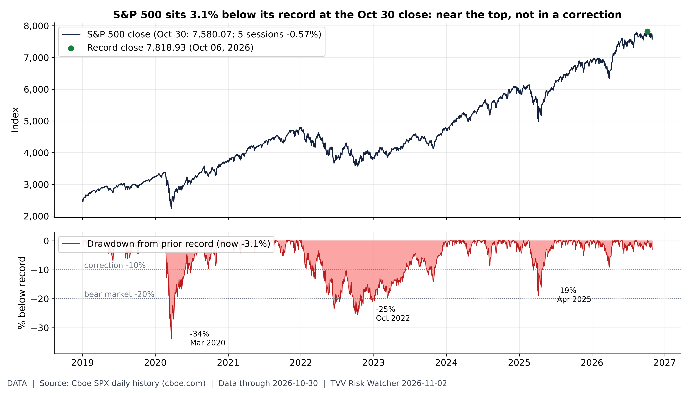
How far from the top. The S&P 500 closed Oct 30 at 7,580.07, -0.57% over 5 sessions and 3.1% below its Oct 06 record close of 7,818.93; for scale, the 2020, 2022 and 2025 drawdowns reached -34%, -25% and -19%. [Data; data as of 2026-10-30 (latest close; Cboe SPX history)] Source: cboe.com data page
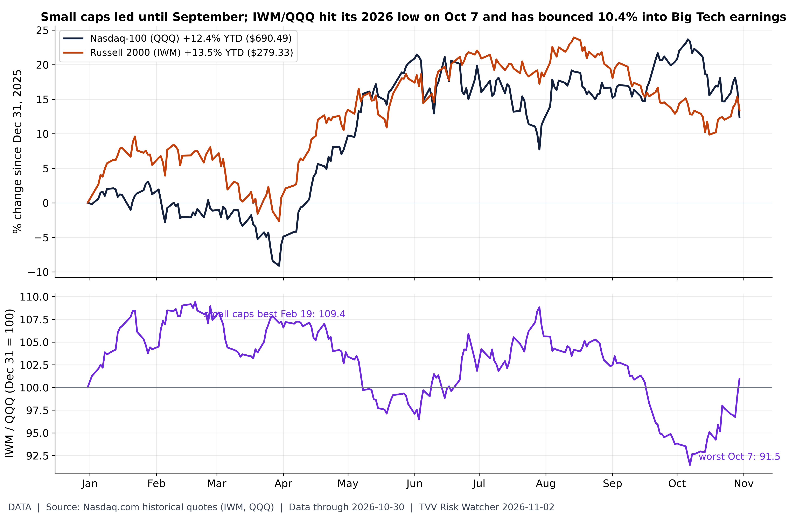
Is the rally broadening?. Closes Fri Oct 30: QQQ $690.49 (+12.4% YTD) vs IWM $279.33 (+13.5%). The IWM/QQQ ratio is 101.0 (Dec 31 = 100), +7.7% over the last 20 sessions; its 2026 high was 109.4 on Feb 19 and its low 91.5 on Oct 7, so small caps have regained 10.4% relative to Nasdaq-100 since. A rising ratio means breadth beyond megacaps; Microsoft, Alphabet, Amazon and Meta have reported Q3; Apple reports Nov 2 after the close. [Data; data as of 2026-10-30 (Fri close)] Source: nasdaq.com data page
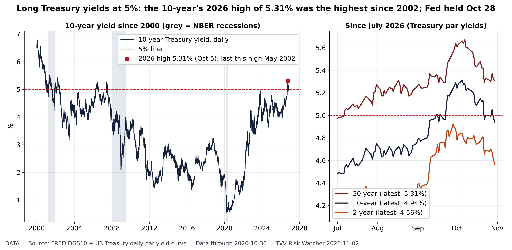
10Y at 5%: 2026 high is the highest since 2002. The 10-year Treasury closed at 4.94% on Oct 30 (30-year 5.31%, 2-year 4.56%); its 2026 high of 5.31% on Oct 5 was the highest since May 2002. The FOMC held at 3.75-4.00% on Oct 28. [Data; data as of 2026-10-30 (FRED DGS10 to Oct 29; later days from Treasury par yield curve)] Source: fred.stlouisfed.org data page
10. Polymarket and Kalshi Sentiment Highlights
- ★ Election eve, Kalshi vs Polymarket: Democrats are 94.5% on Polymarket and 93.8% on Kalshi to win the House, and 72.5% and 73.5% for the Senate, a gap of about a point. A Democratic sweep is 71.5% and 70.5%. PolyKal · Polymarket midterms
- ★ Senate races move: over seven days the leading Kansas Senate candidate rose about 24 points to 61.5% and Maine to 74.5% from 60% on Polymarket, while the Florida governor's leader fell to about 62% from 81%. Iowa's Senate race is closest, at 53.5% on Polymarket and 52.5% on Kalshi. PolyKal
- ★ Battleground odds, projection: Polymarket prices Democratic or independent wins in Michigan at 82%, Texas 76%, Maine 74%, Alaska 74% and Ohio 72%, with Iowa at 48% and Nebraska (Osborn) at 28%. These are market odds, not results; they will be scored against the outcomes on Nov 4 (see graph). Polymarket Texas · Polymarket Maine
- Recession and summit odds: a US recession by end-2026 is 5.5%, down from 12.5% on Sep 24, and a Trump-Putin-Zelensky meeting before 2027 is 7% (see graphs; market odds). Polymarket recession · Polymarket summit
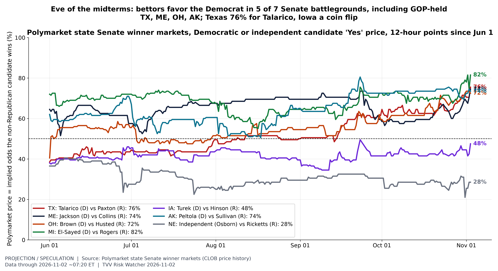
Senate battlegrounds: race-by-race odds. PREDICTIVE (market odds, not results). Polymarket 'Yes' prices for the Democratic (or, in Nebraska, independent) candidate in seven battleground Senate races (six Republican-held; Michigan is an open Democratic seat), ~7:20 AM ET Nov 2: TX 76%; ME 74%; OH 72%; MI 82%; IA 48%; AK 74%; NE 28%. Prices are implied probabilities from trading, not polls; thin markets can swing on small volume. Different chart type from the Oct 31 House/Senate balance-of-power chart: individual races over time. Election Tue Nov 3; results scoring follows Nov 4. [Projection; data as of 2026-11-02 ~07:20 ET (Polymarket CLOB price history)] Source: polymarket.com data page
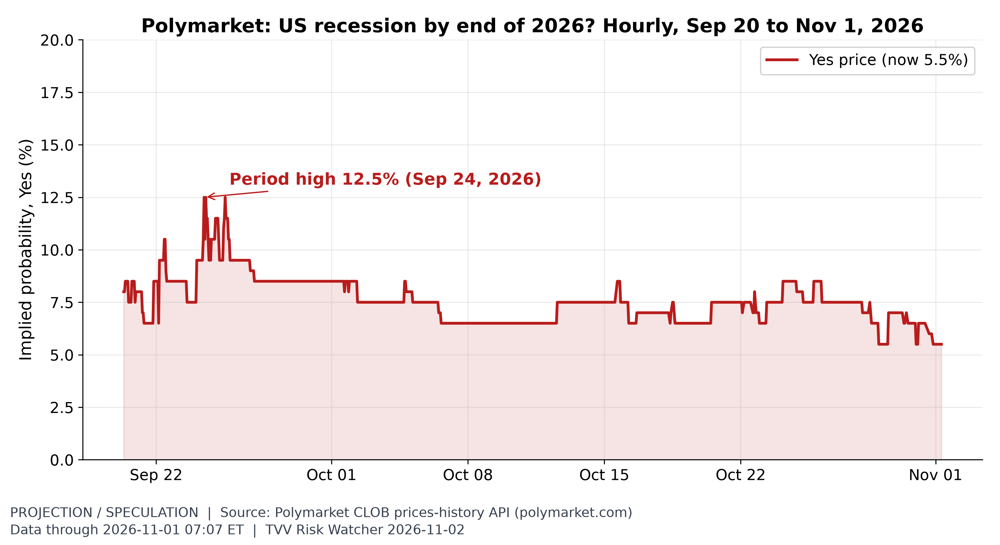
Recession odds. Traders price a 5.5% chance of a US recession by end-2026 (market rules define it), vs a high of 12.5% on Sep 24 in the API history window (hourly since Sep 20). [Projection/Speculation; data as of 2026-11-01 07:07 ET] Source: polymarket.com data page
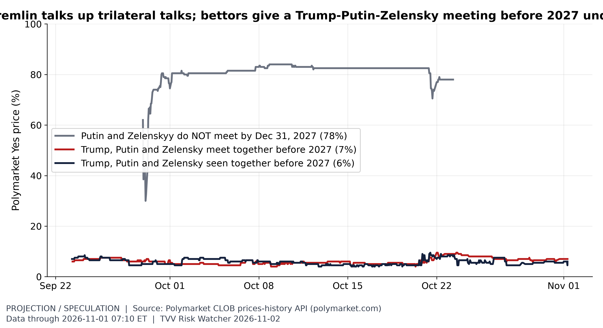
Summit talk vs summit odds. Polymarket ~07:10 ET Nov 1: Trump, Putin and Zelensky meet together before 2027 7%; seen together before 2027 6%; Putin and Zelenskyy do not meet at all by end-2027 78%. The meet-before-2027 price ranged 4.0-9.5% in October despite Kremlin talk of trilateral talks in mid-November. Thin markets ($60K-$108K volume); crowd prices, not forecasts. [Projection/Speculation; data as of 2026-11-01 07:10 ET (hourly)] Source: polymarket.com data page
11. Tech-Metrics
- ★ Palantir tonight: analysts expect third-quarter revenue up 85% to $2.18 billion, slowing from 93% growth in Q2, and adjusted EPS of $0.41, per Koyfin. The stock closed Oct 30 at $184.11, up 3.6% this year against 12.4% for QQQ and 11.9% below its Oct 9 high; it jumped 29.5% the session after its Q2 report (see graph). Yahoo Finance · Nasdaq.com
- ★ Apple tonight: fiscal Q4 results at 4:30 PM ET (call at 5 PM) are the first under CEO John Ternus; investors are watching how Apple absorbs higher memory costs and reported hinge and screen issues on the iPhone Duo. Yahoo Finance · Trade2Spike
- ★ Memory squeeze hits devices: Omdia says global smartphone shipments fell 20% year on year in the third quarter, the weakest third quarter since 2013, as memory prices rose; Samsung and SK hynix say their high-bandwidth memory is sold out through at least next year. Korea Times
- AGI odds, projection: Kalshi prices AGI before 2027 at 6.0% and before 2028 at 41.0%; Polymarket's OpenAI-announcement contract is 5.5% (see graph; market odds). Kalshi AGI · Polymarket AGI
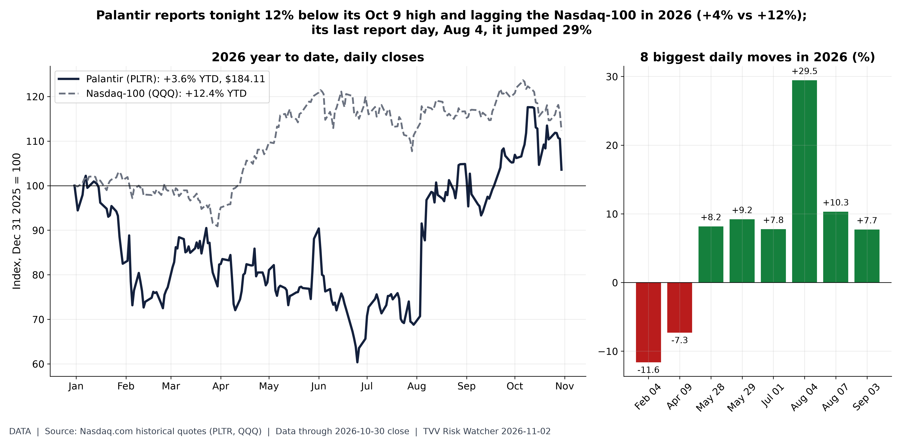
Palantir into earnings. Nasdaq.com daily closes through Fri Oct 30: PLTR $184.11, +3.6% year to date vs QQQ +12.4%; 11.9% below its $209.05 close on Oct 09 2026. Largest 2026 one-day move +29.5% on Aug 04, the session after its Q2 report. Palantir reports Q3 results Mon Nov 2 after the close. [Data; data as of 2026-10-30 close (Nasdaq.com)] Source: nasdaq.com data page
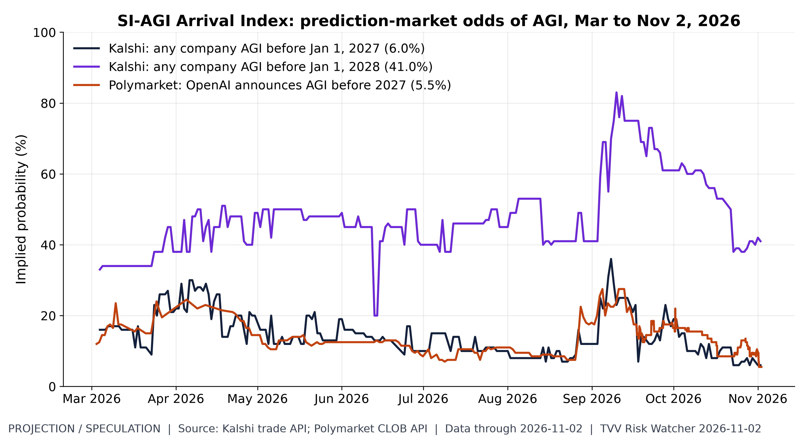
SI-AGI arrival odds. Markets price AGI before 2027 at 6.0% (Kalshi, any company) and 5.5% (Polymarket, OpenAI announcement), and before 2028 at 41.0% (Kalshi). [Projection/Speculation; data as of 2026-11-02 (prices ~7 AM ET)] Source: kalshi.com data page
12. AI Hypergrowth Risks
- ★ Concentration risk, Korea: semiconductors made up 49% of South Korea's October exports, and its January-October exports passed $900 billion for the first time. The Korea Times says the memory outlook assumes hyperscaler capex rises more than 60% in 2027, while Alphabet's capex reached 121.4% of operating cash flow and Meta and Amazon have turned to heavy debt and equity raising. Korea Times
- ★ AI credit: Blackstone told investors Anthropic is likely to get a high double-B, below-investment-grade rating after its IPO, reversing earlier guidance, the FT reported; Reuters also cites reports that OpenAI cut the target of its latest funding round by $10 billion. TechCrunch (FT) · Reuters via Investing.com
- ★ Chips vs power: since Jan 2, 2025 the semiconductor ETF SMH is up 113.4% against 13.9% for utilities (XLU), 8.2% for Constellation and -7.5% for Vistra; over the last 90 days SMH is down 3.3% and XLU 2.1%, so both legs of the AI trade have cooled (see graph). Nasdaq.com
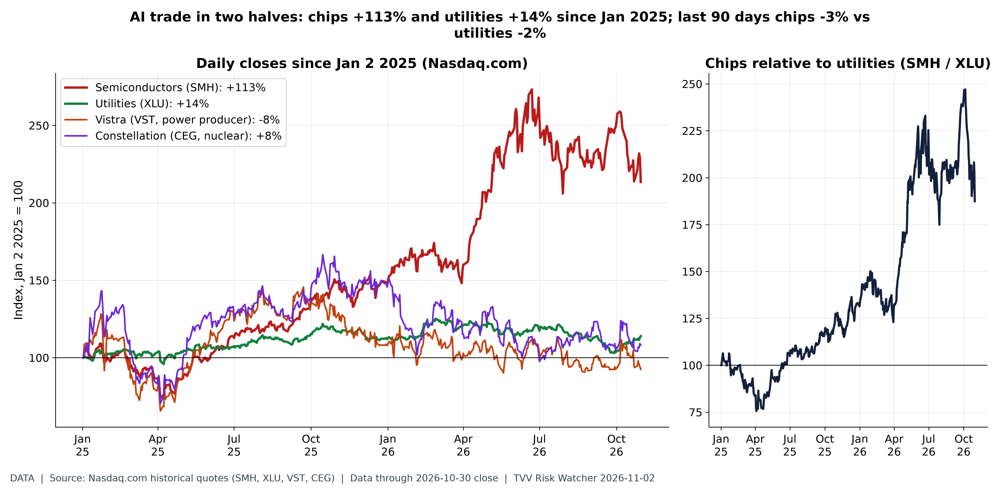
AI chips vs AI power. Nasdaq.com daily closes through Fri Oct 30: Semiconductors (SMH) +113.4%; Utilities (XLU) +13.9%; Vistra (VST, power producer) -7.5%; Constellation (CEG, nuclear) +8.2% since Jan 2 2025. Last 90 days: SMH -3.3%, XLU -2.1%. Data-center growth runs on two trades: chips (Nvidia, TSMC, Broadcom in SMH) and electricity (utilities and power producers selling to data centers). The SMH/XLU ratio shows which side the market is paying for; concentration risk if both depend on the same AI capex. [Data; data as of 2026-10-30 close (Nasdaq.com)] Source: nasdaq.com data page
TECHVESTVENTURES ACTION-ALERT — November 2, 2026
EDITOR — Michael Hentschel
Most news events require or spawn no action or reaction, some (but not many) are or become warnings. We draw attention to substantial lifestyle risks and market risks in particular, some created by Mid-Term Vote anxieties, Middle East tensions, vast over-indebtedness globally, and other events we track. Longer term but capable of causing sudden power surges as serious as the Carrington Event. Climate instability occasioned by long-term cyclical solar electro-magnetic flares, is becoming much more prominent and even more likely. New AI predictive analytics and pattern seekers are pointed in some of these directions, and we monitor imminent likelihood. Some readers might hedge and others might see opportunity. The above is not investment advice.